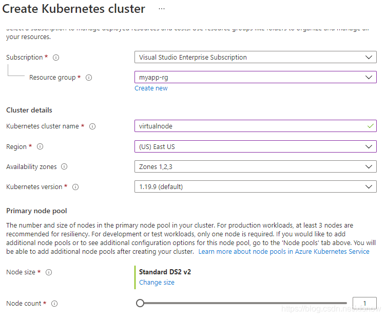
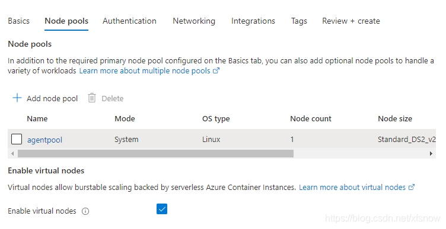
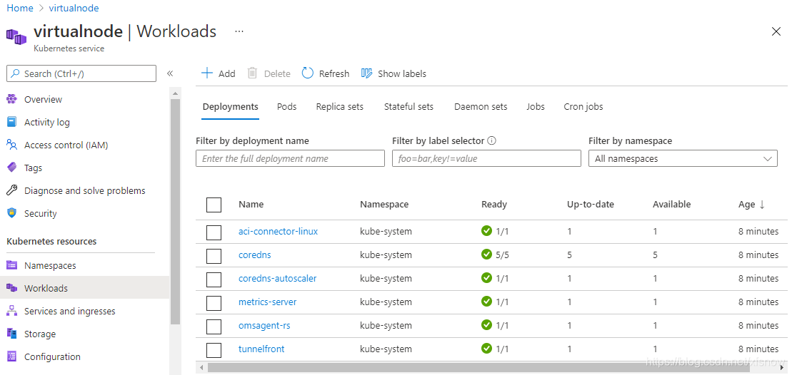
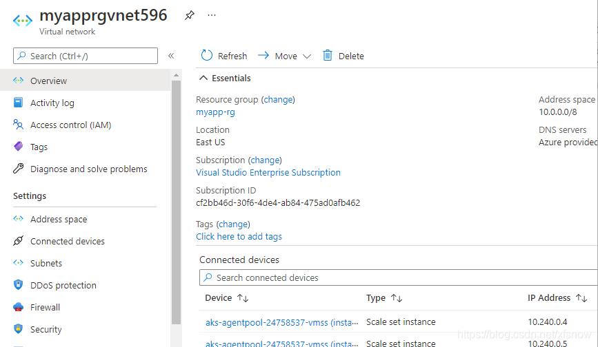
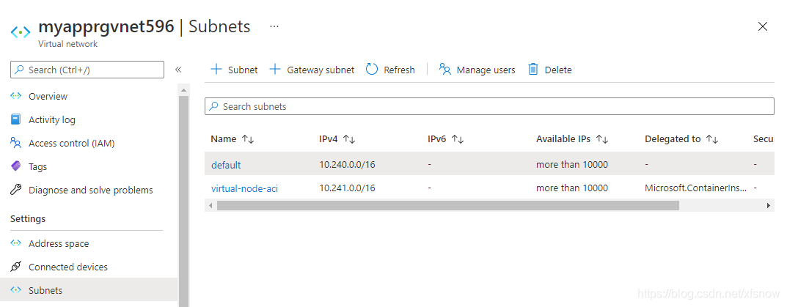
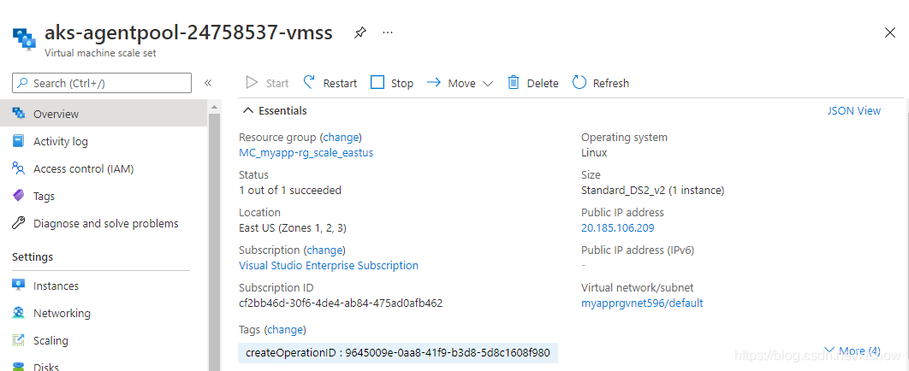
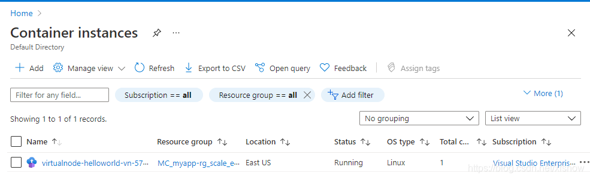

Azure Kubernetes 服务 (AKS)是微软云Azure上托管的Kubernetes 群集，可以用于快速部署Kubernetes 群集。基础的AKS集群使用平 Pod 自动缩放程序，在 Kubernetes 群集中使用指标服务器来监视 Pod 的资源需求。如果应用程序需要更多资源，则会自动增加 Pod 数以满足需求。如果工作节点资源也不够了，则再基于虚拟机扩展集（VMSS）进行工作节点自动扩展。当扩展工作节点时，背后需要新启动虚拟机了，这时资源扩展的速度相对比较慢。为此，Azure还推出了虚拟节点的功能，可以基于Azure容器实例快速创建pod，不使用虚拟机，所以不用等待，大大提高了集群扩展的效率。
注意：截止到2020年5月，Azure中国区域仅有东2区发布了容器实例服务，并且尚未支持AKS通过虚拟节点扩展到容器实例。此功能在海外区域多数已经正式发布，具体发布情况请查阅Azure 容器实例在 Azure 区域的资源可用性。做下面实验，需要海外Azure的环境，我们使用的是美东区。
基本部署
应用
演示用的应用源码在这里。
/https://github.com/xfsnow/container/blob/master/VirtualNodeScaling/
其中Kubernetes 的 deployment 配置文件nginx-vn.yaml使用经典的 nginx 应用作为演示。除了基本的容器镜像配置以外，这里使用了tolerations和affinity来优化使用VM节点和虚拟节点。
tolerations:
- key: virtual-kubelet.io/provider
value: azure
operator: Equal
effect: NoSchedule
affinity:
nodeAffinity:
preferredDuringSchedulingIgnoredDuringExecution:
- weight: 1
preference:
matchExpressions:
- key: type
operator: NotIn
values:
- virtual-kubelet
AKS集群中添加的虚拟节点，默认是tainted，所以我们需要明确指定哪些业务需要通过ACI调度到虚拟节点上。配置文件中的tolerations就是允许pod被调度到虚拟节点上，以便在扩展pod时VM节点资源不够的时候可以创建到虚拟节点上去。
nodeAffinity指定的是新建pod时偏好，而运行时忽略。偏好的是节点的labels中，type不带virtual-kubelet值的，即新建pod时优先放置在VM的节点上，而收缩时优先删除在虚拟节点上的pod。
Azure资源
使用控制台创建一个启用虚拟节点的AKS集群。

区域选择美东，节点数填写1。点击Next: Node pools 按钮。

勾选Enable virtual nodes，这是启用虚拟节点的关键设置。
到Networking页，发现只能选用Azure CNI，不再支持Kubenet了。还需要我们指定Cluster subnet和Virtual nodes subnet，这些都使用默认值就行。
其余配置页都使用默认值，点击Review + Create创建集群。
创建好后，我们先看 Workloads

这里这个aci-connector-linux就是用来连接ACI的pod。
如果刚创建完AKS集群后，这个pod显示不是Ready，请耐心等待一会，可能需要20-30分钟就变成Ready了。
再看VMSS。

可以看到里面有1台VM，正常运行。
点击Virtual network/subnet链接，可以跳转到VM所在的子网。

在这里左边导航链接点击 Subnets，可以看到AKS平台帮我们自动创建了2个子网。

其中 default 是VM节点所在的子网，而另一个virtual-node-aci 是为将来扩展虚拟节点所用的子网。
部署Kubernetes
先连接Kubernetes集群

然后看一下现有的节点。
kubectl get node
NAME STATUS ROLES AGE VERSION
aks-agentpool-34658330-vmss000000 Ready agent 10m v1.19.9
virtual-node-aci-linux Ready agent 9m35s v1.18.4-vk-azure-aci-v1.3.5
可以看到aks-agentpool-34658330-vmss000000是一个普通的基于虚拟机的节点，还有一个virtual-node-aci-linux就是虚拟节点。
我们创建一个命名空间，后面的实验都在这个命名空间里进行。
kubectl create namespace virtualnode
namespace/virtualnode created
先来做一个是基础的，把pod部署到虚拟节点上。
kubectl apply -f helloworld-vn.yaml
deployment.apps/helloworld-vn created
看一下pod
kubectl get pods -o wide -n virtualnode
NAME READY STATUS RESTARTS AGE IP NODE NOMINATED NODE READINESS GATES
helloworld-vn-5749f58859-67vn6 0/1 Creating 0 21s <none> virtual-node-aci-linux <none> <none>
可以看到正在虚拟节点上部署。
再看详情：
kubectl describe pod helloworld-vn-5749f58859-67vn6 -n virtualnode
Name: helloworld-vn-5749f58859-67vn6
Namespace: virtualnode
Priority: 0
Node: virtual-node-aci-linux/
Start Time: Tue, 11 May 2021 11:28:36 +0800
Labels: app=helloworld-vn
pod-template-hash=5749f58859
Annotations: <none>
Status: Running
IP: 10.241.0.4
IPs:
IP: 10.241.0.4
Controlled By: ReplicaSet/helloworld-vn-5749f58859
Containers:
helloworld-vn:
Container ID: aci://6ee343c40cb742b912ce86084cb73c5d0f9997dd55fa0b44290bb0c9b04370a4
Image: mcr.microsoft.com/azuredocs/aci-helloworld
Image ID:
Port: 80/TCP
Host Port: 0/TCP
State: Running
Started: Tue, 11 May 2021 11:28:36 +0800
Ready: True
Restart Count: 0
Environment: <none>
Mounts:
/var/run/secrets/kubernetes.io/serviceaccount from default-token-rzbnb (ro)
Conditions:
Type Status
Ready True
Initialized True
PodScheduled True
Volumes:
default-token-rzbnb:
Type: Secret (a volume populated by a Secret)
SecretName: default-token-rzbnb
Optional: false
QoS Class: BestEffort
Node-Selectors: beta.kubernetes.io/os=linux
kubernetes.io/role=agent
type=virtual-kubelet
Tolerations: node.kubernetes.io/not-ready:NoExecute op=Exists for 300s
node.kubernetes.io/unreachable:NoExecute op=Exists for 300s
virtual-kubelet.io/provider op=Exists
Events:
Type Reason Age From Message
---- ------ ---- ---- -------
Normal Scheduled 82s Successfully assigned virtualnode/helloworld-vn-5749f58859-67vn6 to virtual-n
ode-aci-linux
Normal ProviderCreateSuccess 81s virtual-node-aci-linux/pod-controller Create pod in provider successfully
首次部署虚拟节点使用了82秒，感觉稍微有点慢，这里时间主要用在2方面，一是初次创建ACI实例，更多的时间是用在拉取 mcr.microsoft.com/azuredocs/aci-helloworld 这个镜像文件和部署。
点击查看容器实例

可以看到有1个容器实例了。
最后我们把这个deployment删除，清理资源。
kubectl delete -f helloworld-vn.yaml
deployment.apps "helloworld-vn" deleted
伸缩测试
基于VM的节点和虚拟节点的混合伸缩。
kubectl apply -f nginx-vn.yaml
deployment.apps/nginx-vn created
只部署1个pod时，优先部署在了虚拟机的节点上。
kubectl get pod -o wide --namespace virtualnode
NAME READY STATUS RESTARTS AGE IP NODE NOMINATED NODE READINESS GATES
nginx-vn-54d69f7df4-hxkkz 1/1 Running 0 23s 10.240.0.75 aks-agentpool-34658330-vmss000000 <none> <none>
先扩展到20个副本。
kubectl scale deployment nginx-vn --replicas=20 -n virtualnode
deployment.apps/nginx-vn scaled
查看pod。
kubectl get pod -o wide --namespace virtualnode
NAME READY STATUS RESTARTS AGE IP NODE NOMINATED NODE READINESS GATES
nginx-vn-54d69f7df4-4fr5g 1/1 Running 0 3m2s 10.241.0.19 virtual-node-aci-linux <none> <none>
nginx-vn-54d69f7df4-cg4jb 1/1 Running 0 3m2s 10.241.0.5 virtual-node-aci-linux <none> <none>
nginx-vn-54d69f7df4-cmj6d 1/1 Running 0 3m2s 10.241.0.7 virtual-node-aci-linux <none> <none>
nginx-vn-54d69f7df4-dljkw 1/1 Running 0 3m2s 10.241.0.16 virtual-node-aci-linux <none> <none>
nginx-vn-54d69f7df4-f25fb 1/1 Running 0 3m2s 10.241.0.8 virtual-node-aci-linux <none> <none>
nginx-vn-54d69f7df4-g6ps9 1/1 Running 0 3m2s 10.241.0.15 virtual-node-aci-linux <none> <none>
nginx-vn-54d69f7df4-h2dtq 1/1 Running 0 3m2s 10.240.0.82 aks-agentpool-34658330-vmss000000 <none> <none>
nginx-vn-54d69f7df4-hgkzc 1/1 Running 0 3m2s 10.241.0.14 virtual-node-aci-linux <none> <none>
nginx-vn-54d69f7df4-hxkkz 1/1 Running 0 7m53s 10.240.0.75 aks-agentpool-34658330-vmss000000 <none> <none>
nginx-vn-54d69f7df4-jf4h7 1/1 Running 0 3m2s 10.241.0.20 virtual-node-aci-linux <none> <none>
nginx-vn-54d69f7df4-mtjbn 1/1 Running 0 3m2s 10.241.0.9 virtual-node-aci-linux <none> <none>
nginx-vn-54d69f7df4-q9d5f 1/1 Running 0 3m2s 10.241.0.13 virtual-node-aci-linux <none> <none>
nginx-vn-54d69f7df4-qlf4l 1/1 Running 0 3m2s 10.241.0.18 virtual-node-aci-linux <none> <none>
nginx-vn-54d69f7df4-sb54f 1/1 Running 0 6m27s 10.241.0.4 virtual-node-aci-linux <none> <none>
nginx-vn-54d69f7df4-t4zmf 1/1 Running 0 3m2s 10.241.0.12 virtual-node-aci-linux <none> <none>
nginx-vn-54d69f7df4-xj95k 1/1 Running 0 3m2s 10.241.0.10 virtual-node-aci-linux <none> <none>
nginx-vn-54d69f7df4-xltlt 1/1 Running 0 3m2s 10.241.0.17 virtual-node-aci-linux <none> <none>
nginx-vn-54d69f7df4-xnhtc 1/1 Running 0 3m2s 10.240.0.109 aks-agentpool-34658330-vmss000000 <none> <none>
nginx-vn-54d69f7df4-zbzt5 1/1 Running 0 3m2s 10.241.0.6 virtual-node-aci-linux <none> <none>
nginx-vn-54d69f7df4-zphhk 1/1 Running 0 3m2s 10.241.0.11 virtual-node-aci-linux <none> <none>
再收缩回2个副本。
kubectl scale deployment nginx-vn --replicas=2 -n virtualnode
deployment.apps/nginx-vn scaled
可以看到收缩后，只留下虚拟机节点上的 pod了。
kubectl get pod -o wide --namespace virtualnode
NAME READY STATUS RESTARTS AGE IP NODE NOMINATED NODE READINESS GATES
nginx-vn-54d69f7df4-h2dtq 1/1 Running 0 5m18s 10.240.0.82 aks-agentpool-34658330-vmss000000 <none> <none>
nginx-vn-54d69f7df4-hxkkz 1/1 Running 0 10m 10.240.0.75 aks-agentpool-34658330-vmss000000 <none> <none>
总结
通过ACI扩展到虚拟节点，确实比基于VMSS先扩虚机再扩pod 要快不少。但是扩展出的虚拟节点数量也是有限制的，做不到在短时间内无限的扩展出来。建议做法是，以AKS的自动扩展为基础，结合虚拟节点的快速扩展来支持突增的场景，用虚拟节点来先顶住突增的需求，给AKS扩展争取到时间，2种同时扩展，等VMSS扩起来以后，就可以把虚拟节点替换下了。而且 VMSS 的扩展，理论上可以提供更大规模的资源，能够提供比仅用虚拟节点更多的资源。这样做就兼顾了性能的成本。